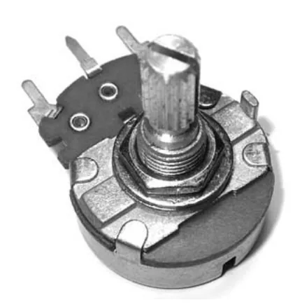
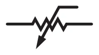
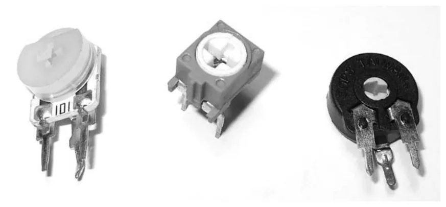

Variable resistors, also known as potentiometers, can generally be adjusted from 0 Ω up to their rated value. Their schematic symbol is shown in Figure 4-34.
Variable resistors have three pin connections: one in the center pin and one on each side. As the shaft of a variable resistor turns, it increases the resistance between one side and the center and decreases the resistance between the center and the opposite side.
Variable resistors are available as linear and logarithmic. The resistance of linear models changes at a constant rate when turning, while the resistance of logarithmic models changes slowly at first and then increases rapidly. Logarithmic potentiometers are used more often in audio amplifier circuits, because they model the human hearing response. Most Arduino projects use linear variable resistors such as the one shown in Figure 4-35.


You can also get miniature versions of variable resistors, known as trimpots or trimmers (see Figure 4-36). Because of their size, trimpots are more useful for making adjustments in circuits, but they’re also very useful for breadboard work because they can be slotted in.
